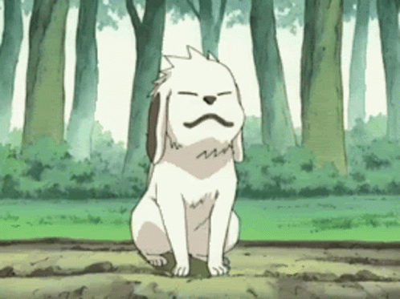

Akamaru (赤丸)
Inuzuka clan
Smile Killer
Akamaru (赤丸) is a nin-dog (忍犬, ninken) from Konohagakure's Inuzuka clan. He is Kiba Inuzuka's partner, as well as his best friend and constant companion. He is also a member of Team Kurenai.
Personality
Akamaru has been described as active and devoted.[6] This can be seen from his interactions with people, especially his best friend and companion Kiba whom he has always been with since the two met. They often spend their time going on walks, or more accurately, running through trees chasing one another. His devotion is most often seen when Kiba is hurt in battle; Akamaru will immediately run to his side. Rai no Sho, a story from Akamaru's point of view, reveals much of his personality.  Akamaru is revealed to have a humorous thought process by erroneously explaining something, but then immediately correcting himself. He has a very scientific thought process about humans, thinking they enter oestrous too late in life when they should be focusing on being shinobi instead of finding a "mate". It's also revealed Akamaru is very overprotective of Kiba as he immediately tried fruitlessly to pull his master away from Tamaki when he realised the two had a strong mutual attraction to each other, as he didn't want Kiba to shy away from his training in favour of romancing Tamaki like "the others".
Background
At some point, while Kiba was still in the Academy, his mother, Tsume Inuzuka, entrusted him with Akamaru. Although Akamaru almost immediately urinated on Kiba's face, much to his mother and sister's amusement,[5] the two would soon become inseparable.